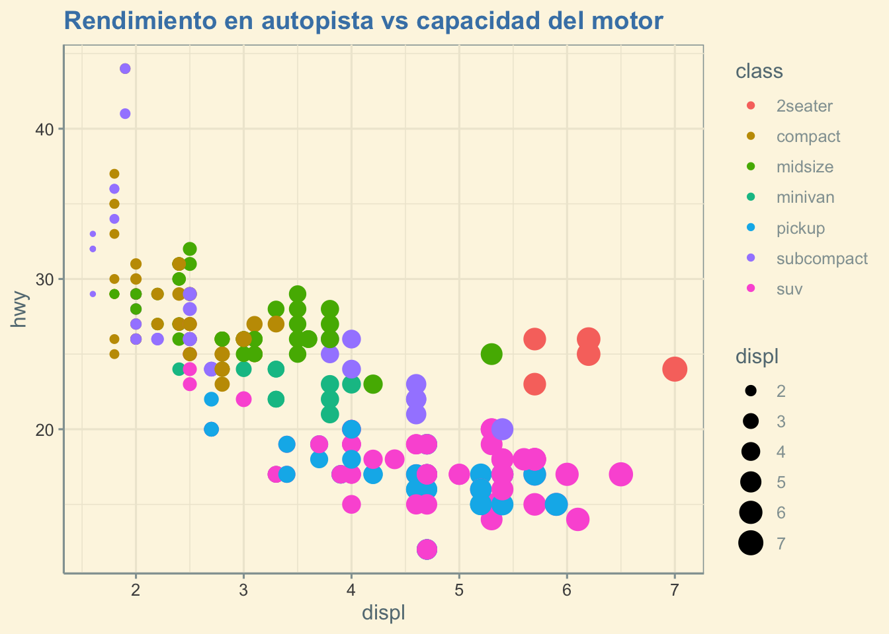
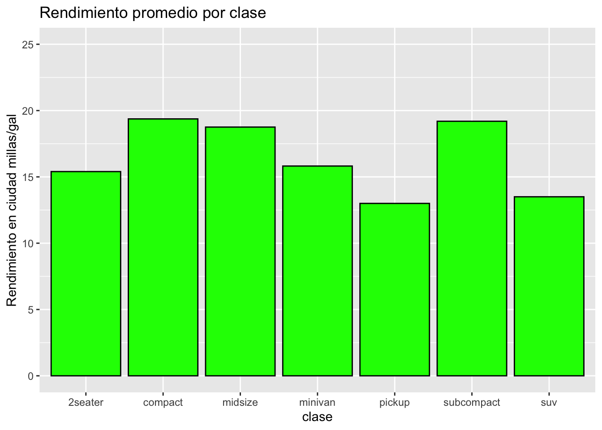
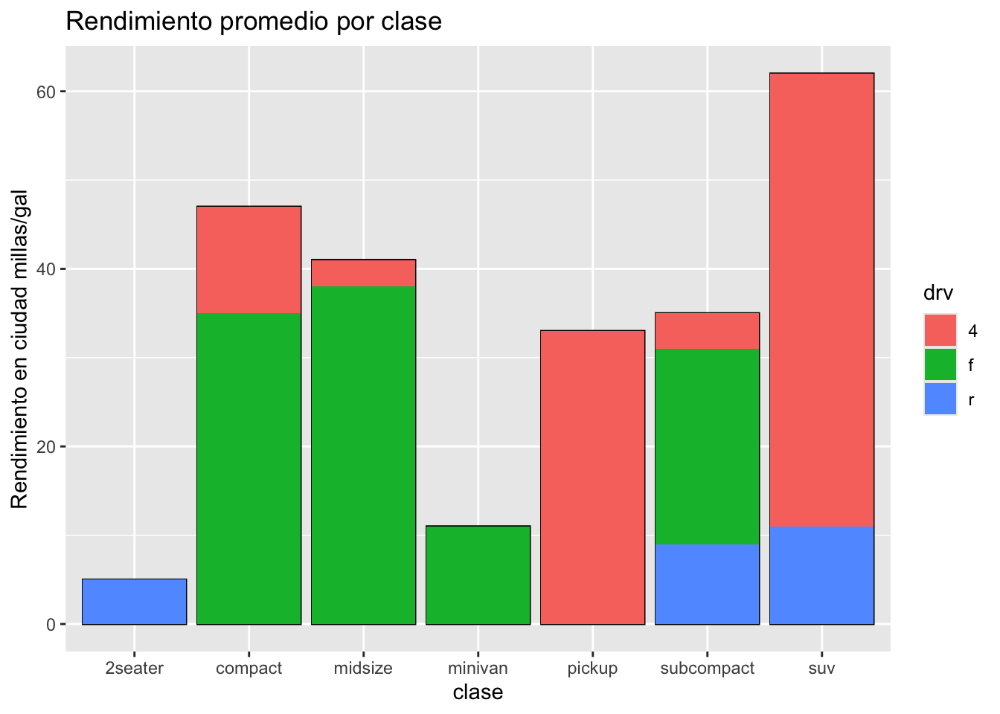
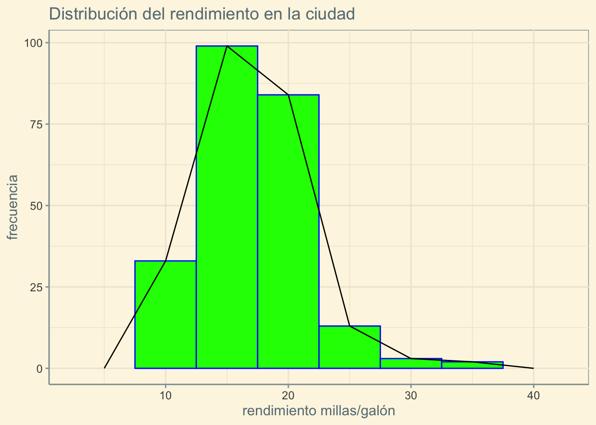
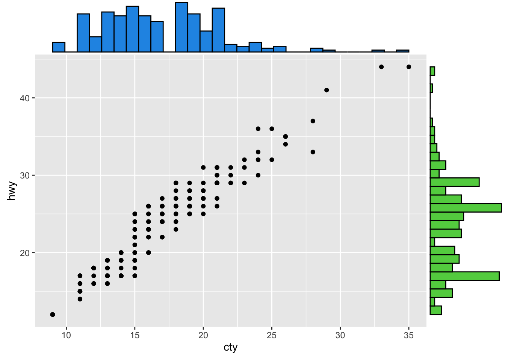
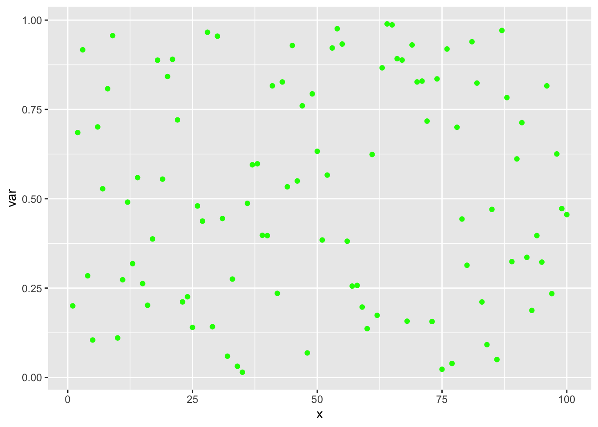
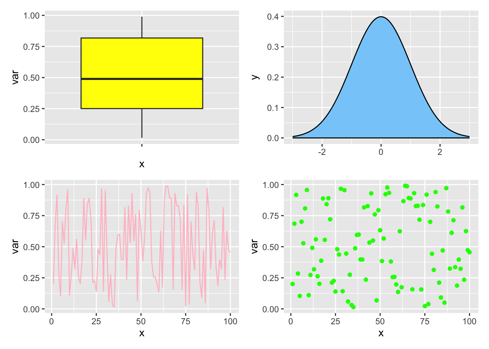
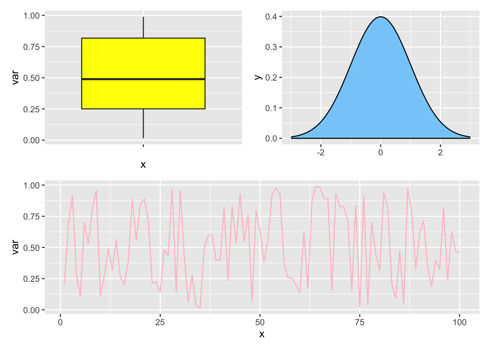
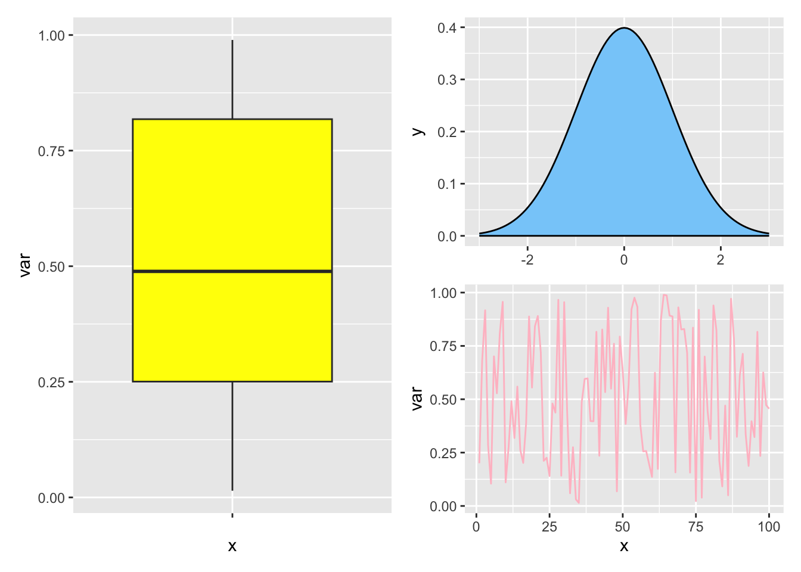

El paquete ggplot2 es un paquete que hace gráficas a partir de los datos. Primero, instálelo con install.packages("ggplot2") y activarlo con library(ggplot2). Los paquetes ggExtra y ggthemes son paquetes adicionales que ayudan a mejorar sus gráficas, de igual forma se instalan y se activan. Para saber más vea R Core Team (2024) y Wickham (2016).
1.1 Usos de ggplot2
Activamos los paquetes y cargamos el archivo de datos mpg del mismo. Haga data(package="ggplot2") en la consola de R, para ver los archivos de datos que contiene el paquete. Usaremos el archivo de datos mpg. El paquete ggplot2 trabaja únicamente a partir de un dataframe o un tibble.
Activamos los paquetes a usar, algunos son extensiones del paquete ggplot2:
Escribir ggplot(data = <dataframe>) o ggplot(<dataframe>), se puede omitir data=.
Código
ggplot(data=mpg)
Al correr esta instrucción solo se obtiene el plano donde se irán agregando capas con el signo +. Nunca deje el signo + iniciando línea.
2.2 Segundo paso
Agregamos una geometría con la(s) variable(s) que se van a graficar. Se puede omitir mapping, aes significa estética. Escogemos la función geom_point() y dentro de aes() incluimos las variables a graficar. Esto será una gráfica de puntos o una gráfica de dispersión. Las geometrías más usuales son: geom_bar(), geom_boxplot(), geom_line(),geom_rect(),geom_histogram(), geom_smooth(), geom_rug()…. Vea la referencia de ggplot2aquí
ggplot(mpg) +geom_point(aes(x=displ, y=hwy, color=class, size=displ)) +labs(x ="Capacidad del motor(litros)", y ="En autopista millas por galón", colour ="Número de cilindros",title ="Millaje por tamaño del motor y cilindros",subtitle="USTA",caption ="Fuente: https://fueleconomy.gov")
2.6 Sexto paso theme
Escoger un tema. La función theme() personaliza títulos, etiquetas, fuentes, fondos, y leyendas.
ggplot(mpg) +geom_point(aes(x=displ, y=hwy, color=class, size=displ)) +theme_solarized() +ggtitle("Rendimiento en autopista vs capacidad del motor") +theme(plot.title =element_text(face ="bold", colour ="steelblue"))

3 Diagrama de barras barplot
Para graficar una variable categórica utilice geom_bar().
Código
g <-ggplot(mpg, aes(class))g +geom_bar(fill='red')
Código
g <-ggplot(mpg, aes(class,cty))g +geom_bar(stat ="summary_bin", fun = mean, color="black", fill="green") +labs( title="Rendimiento promedio por clase",x="clase", y="Rendimiento en ciudad millas/gal") +ylim(0,25)
Warning: Removed 8 rows containing non-finite outside the scale range
(`stat_summary_bin()`).

Código
g <-ggplot(mpg, aes(class))g +geom_bar( color="black") +geom_bar(aes(fill= drv)) +labs( title="Rendimiento promedio por clase",x="clase", y="Rendimiento en ciudad millas/gal")

4 Diagrama de caja y bigotes box and whiskers plot
`stat_bin()` using `bins = 30`. Pick better value with `binwidth`.
Código
ggplot(mpg, aes(x=cty)) +geom_histogram(color='blue', fill='green',binwidth=5) +ggtitle("Distribución del rendimiento en la ciudad") +geom_freqpoly(binwidth=5) +xlab("rendimiento millas/galón") +ylab("frecuencia") +theme_solarized()

7 Extensiones de ggplot2
Después de creado el paquete ggplot2 muchos usuarios han realizado paquetes encima de ggplot2, llamados extensiones. Para saber más vea aquí. La documentación de ggExtra está en Attali y Baker (2023). La extensión ggExtra permite hacer histogramas al margen de un diagrama de dispersión:
Código
p <-ggplot(mpg) +geom_point(aes(cty,hwy)) ggMarginal(p, type ="histogram",xparams =list(fill =4),yparams =list(fill =3))

8 Etiquetas y/o anotaciones en los gráficos
Código
mtcars
mpg
cyl
disp
hp
drat
wt
qsec
vs
am
gear
carb
Mazda RX4
21.0
6
160.0
110
3.90
2.620
16.46
0
1
4
4
Mazda RX4 Wag
21.0
6
160.0
110
3.90
2.875
17.02
0
1
4
4
Datsun 710
22.8
4
108.0
93
3.85
2.320
18.61
1
1
4
1
Hornet 4 Drive
21.4
6
258.0
110
3.08
3.215
19.44
1
0
3
1
Hornet Sportabout
18.7
8
360.0
175
3.15
3.440
17.02
0
0
3
2
Valiant
18.1
6
225.0
105
2.76
3.460
20.22
1
0
3
1
Duster 360
14.3
8
360.0
245
3.21
3.570
15.84
0
0
3
4
Merc 240D
24.4
4
146.7
62
3.69
3.190
20.00
1
0
4
2
Merc 230
22.8
4
140.8
95
3.92
3.150
22.90
1
0
4
2
Merc 280
19.2
6
167.6
123
3.92
3.440
18.30
1
0
4
4
Merc 280C
17.8
6
167.6
123
3.92
3.440
18.90
1
0
4
4
Merc 450SE
16.4
8
275.8
180
3.07
4.070
17.40
0
0
3
3
Merc 450SL
17.3
8
275.8
180
3.07
3.730
17.60
0
0
3
3
Merc 450SLC
15.2
8
275.8
180
3.07
3.780
18.00
0
0
3
3
Cadillac Fleetwood
10.4
8
472.0
205
2.93
5.250
17.98
0
0
3
4
Lincoln Continental
10.4
8
460.0
215
3.00
5.424
17.82
0
0
3
4
Chrysler Imperial
14.7
8
440.0
230
3.23
5.345
17.42
0
0
3
4
Fiat 128
32.4
4
78.7
66
4.08
2.200
19.47
1
1
4
1
Honda Civic
30.4
4
75.7
52
4.93
1.615
18.52
1
1
4
2
Toyota Corolla
33.9
4
71.1
65
4.22
1.835
19.90
1
1
4
1
Toyota Corona
21.5
4
120.1
97
3.70
2.465
20.01
1
0
3
1
Dodge Challenger
15.5
8
318.0
150
2.76
3.520
16.87
0
0
3
2
AMC Javelin
15.2
8
304.0
150
3.15
3.435
17.30
0
0
3
2
Camaro Z28
13.3
8
350.0
245
3.73
3.840
15.41
0
0
3
4
Pontiac Firebird
19.2
8
400.0
175
3.08
3.845
17.05
0
0
3
2
Fiat X1-9
27.3
4
79.0
66
4.08
1.935
18.90
1
1
4
1
Porsche 914-2
26.0
4
120.3
91
4.43
2.140
16.70
0
1
5
2
Lotus Europa
30.4
4
95.1
113
3.77
1.513
16.90
1
1
5
2
Ford Pantera L
15.8
8
351.0
264
4.22
3.170
14.50
0
1
5
4
Ferrari Dino
19.7
6
145.0
175
3.62
2.770
15.50
0
1
5
6
Maserati Bora
15.0
8
301.0
335
3.54
3.570
14.60
0
1
5
8
Volvo 142E
21.4
4
121.0
109
4.11
2.780
18.60
1
1
4
2
Código
p <-ggplot(mtcars, aes(wt, mpg, label =rownames(mtcars)))p +geom_label()
# creamos un dataframeset.seed(5)x <-runif(100)df <-data.frame(x =seq_along(x), var = x)# boxplotp1 <-ggplot(df, aes(x ="", y = var)) +geom_boxplot(fill='yellow')# gráfico de densidadp2 <-ggplot() +stat_function(fun = dnorm, geom ="density",xlim =c(-3, 3), fill ="lightskyblue") # gráfico de líneap3 <-ggplot(df, aes(x = x, y = var)) +geom_line(color ="pink")# diagrama de dispersiónp4 <-ggplot(df, aes(x = x, y = var)) +geom_point(color ="green")# ver las gráficasp1
Código
p2
Código
p3
Código
p4

La libreria patchwork permite personalizar la presentación de los gráficos
Código
library(patchwork)p1+p2+p3+p4

Código
(p1 | p2) / p3

Código
p1 | (p2 / p3)

11 Mapas
ggplot2 también permite graficar mapas.
Código
library(sf)
Linking to GEOS 3.11.0, GDAL 3.5.3, PROJ 9.1.0; sf_use_s2() is TRUE
To cite R in publications use:
R Core Team (2024). _R: A Language and Environment for Statistical
Computing_. R Foundation for Statistical Computing, Vienna, Austria.
<https://www.R-project.org/>.
A BibTeX entry for LaTeX users is
@Manual{,
title = {R: A Language and Environment for Statistical Computing},
author = {{R Core Team}},
organization = {R Foundation for Statistical Computing},
address = {Vienna, Austria},
year = {2024},
url = {https://www.R-project.org/},
}
We have invested a lot of time and effort in creating R, please cite it
when using it for data analysis. See also 'citation("pkgname")' for
citing R packages.
Código
citation("ggplot2")
To cite ggplot2 in publications, please use
H. Wickham. ggplot2: Elegant Graphics for Data Analysis.
Springer-Verlag New York, 2016.
A BibTeX entry for LaTeX users is
@Book{,
author = {Hadley Wickham},
title = {ggplot2: Elegant Graphics for Data Analysis},
publisher = {Springer-Verlag New York},
year = {2016},
isbn = {978-3-319-24277-4},
url = {https://ggplot2.tidyverse.org},
}
Código
citation("ggExtra")
To cite package 'ggExtra' in publications use:
Attali D, Baker C (2023). _ggExtra: Add Marginal Histograms to
'ggplot2', and More 'ggplot2' Enhancements_. R package version
0.10.1, <https://CRAN.R-project.org/package=ggExtra>.
A BibTeX entry for LaTeX users is
@Manual{,
title = {ggExtra: Add Marginal Histograms to 'ggplot2', and More 'ggplot2'
Enhancements},
author = {Dean Attali and Christopher Baker},
year = {2023},
note = {R package version 0.10.1},
url = {https://CRAN.R-project.org/package=ggExtra},
}
R Core Team. 2024. R: A Language and Environment for Statistical Computing. Vienna, Austria: R Foundation for Statistical Computing. https://www.R-project.org/.
Wickham, Hadley. 2016. ggplot2: Elegant Graphics for Data Analysis. Springer-Verlag New York. https://ggplot2.tidyverse.org.